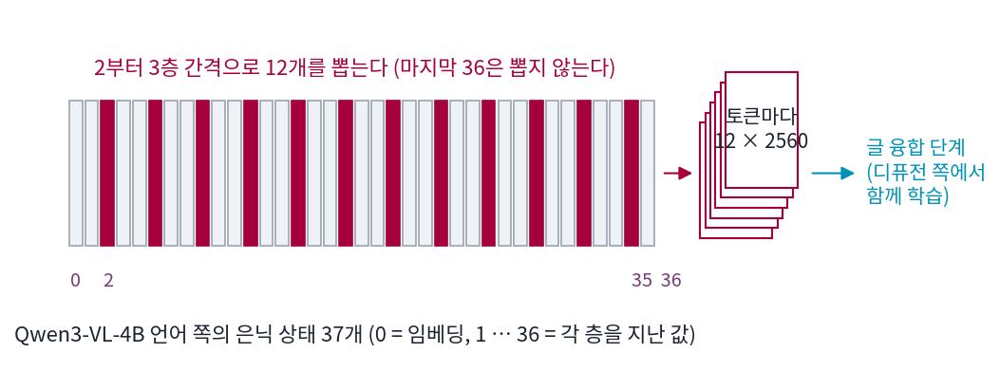

글을 읽는 인코더: CLIP의 마지막 층에서 언어모델의 여러 층으로
층 뽑기: 여러 층의 은닉 상태를 쌓아 넘기기
언어모델의 마지막 층은 다음 토큰 쪽으로 기울어 있고, 앞쪽 층은 아직 지금 토큰의 낱말 정보가 많았다. 그 사이의 층이 문장의 뜻을 가장 잘 담는다면 그 층 하나를 고르면 될 것 같다. 그런데 그림에 필요한 정보는 뜻만이 아니다. 간판에 쓸 글자의 철자처럼 낱말 그대로의 정보도 있고, 문장 전체의 짜임도 있다. 층마다 무엇이 들어 있는지 먼저 재 보고, 하나를 고를지 여럿을 쓸지 정해 보자.
역사: 하나에서 셋으로, 셋에서 열둘로
언어모델 인코더를 쓰는 모델도 처음에는 층 하나를 골랐다. Qwen-Image 는 마지막 층, Z-Image 는 끝에서 둘째 층이다. FLUX.2 는 언어모델 Mistral Small 3(24B)의 10, 20, 30번째 층의 은닉 상태를 쌓아 쓰고, 같은 계열의 작은 모델 FLUX.2 Klein 은 Qwen3-4B·8B 의 9, 18, 27번째 층을 쓴다(ComfyUI comfy/text_encoders/flux.py). Krea 2 는 Qwen3-VL-4B 언어 쪽 36층 가운데 2번째 층부터 세 층 간격으로 12개, 곧 2, 5, 8, …, 35번째 층의 은닉 상태를 쌓는다(comfy/text_encoders/krea2.py 의 KREA2_TAP_LAYERS). diffusers 문서의 소개도 「마지막 은닉 상태 대신, 열두 개 디코더 층의 은닉 상태를 토큰마다 뽑아 트랜스포머 안의 작은 글 융합 단계에서 섞는다」고 적는다. 층 번호는 「그 층까지 지난 값」이라, 35는 마지막 층 바로 앞의 출력이고 마지막 층(36)은 뽑지 않는다.

층마다 다른 것
Qwen3-VL-4B 언어 쪽에서 층마다 세 가지를 쟀다. 첫째는 은닉 상태를 마지막 정규화와 출력 헤드에 넣어 읽은 1등 토큰이 다음 자리의 토큰인 비율(로짓 렌즈)이다. 둘째는 고양이 색 탐침이다. 「a red cat and a blue dog」처럼 고양이와 다른 물건이 하나씩 나오고 고양이가 앞에도 뒤에도 오는 문장 1,568개에서, 문장 끝 토큰의 은닉 상태만으로 고양이 색 여덟 가지를 맞히는 선형 분류기를 5겹 교차 검증으로 잰다. 셋째는 뜻 짝 찾기다. 뜻은 같고 낱말이 다른 문장 짝 40개와 낱말은 같고 뜻이 다른 미끼 40개를 섞어 두고, 프롬프트 토큰의 평균 벡터로 가장 가까운 문장이 제 짝인 비율을 잰다.
세 곡선은 서로 다른 모양이다. 고양이 색 탐침은 임베딩만 10%(여덟 가지를 찍은 12.5% 근처)이고 1층부터 36층까지 모두 98% 이상이다. 「무엇이 무슨 색인가」 정도의 사실은 첫 층을 지나자마자 생겨 끝까지 남는다. 뜻 짝 찾기는 임베딩 22.5%에서 올라 20층 근처에서 가장 높고, 뒤로 가며 조금 내려온다. 다음 토큰 비율은 20층까지 거의 0이다가 뒤쪽에서 오른다. 층마다 「있는 정보」보다 「크게 자리 잡은 정보」가 다르다.
이렇게 서로 다른 층의 은닉 상태를 여럿 골라 토큰마다 쌓아 조건으로 넘기는 것을 층 뽑기 (여러 층 쌓기 / layer tapping)라고 부른다. 섞는 법은 디퓨전 쪽이 배운다. Krea 2 에서는 이렇다(ComfyUI 에서 옮긴 node/krea2/model.py 의 TextFusionTransformer).
ML에서: 같은 틀, 다른 번호
여러 층을 쌓는 모델들은 층 번호만 다르고 틀은 같다. 언어모델은 얼려 둔 채 은닉 상태만 뽑고, 쌓은 것을 어떻게 섞을지는 디퓨전 트랜스포머와 함께 처음부터 학습한다. 그래서 「어느 층이 가장 좋은가」를 사람이 정하지 않아도 된다. 사람이 정하는 것은 후보를 얼마나 넓게 줄지다. FLUX.2 의 세 층은 앞·가운데·뒤에서 하나씩, Krea 2 의 열두 층은 처음과 마지막 한두 층을 빼고 고르게 훑는다.
문제 9. 심사위원 셋
노래 경연에서 심사위원 셋이 기술, 감정, 무대를 따로 채점한다. 참가자 A는 (90, 70, 60), B는 (70, 75, 80)이다. (가) 세 점수를 똑같이 평균하면 누가 이기는가? (나) 비중을 (0.2, 0.2, 0.6)으로 하면? (0.6, 0.2, 0.2)로 하면? (다) 방송국이 「시청자 투표와 가장 잘 맞는 비중」을 지난 시즌 기록으로 정하려 한다. 점수 셋을 모두 받아 두는 것과 처음부터 평균 하나만 받아 두는 것은 어떻게 다른가?

(가)는 A 73.3, B 75.0이라 B요. (나)는 0.2, 0.2, 0.6이면 A 68.0, B 77.0이라 B가 더 크게 이기고, 0.6, 0.2, 0.2면 A 80.0, B 73.0이라 A가 이겨요.

비중만 바꿨는데 승자가 뒤집히네.

(다)에서 평균 하나만 받아 두었다면, 지난 시즌 기록으로 비중을 다시 정할 수 있나요?

못 해요. 평균 73.3이 기술 90에서 왔는지 무대 80에서 왔는지 이미 섞여서 알 수 없으니까요. 셋을 다 받아 둬야 비중을 나중에 배울 수 있어요.

층 뽑기가 이거야. 층 하나를 고르는 건 사람이 비중을 미리 (0, 0, 1)로 정한 거고, 열두 층을 쌓아 넘기면 비중 λ를 디퓨전 쪽이 데이터로 배우는 거고.

팀 과제 평가에서 교수님이 조원 평가표를 다 받아 두면 나중에 「발표 비중 좀 올리자」가 되는데, 총점만 받아 두면 못 바꾸는 거랑 같네요.
문제 10. 열두 층의 무게
Krea 2 의 글 조건을 세어 본다. (가) 토큰 하나에 넘어가는 수는 몇 개인가? (나) diffusers 구현은 프롬프트를 512토큰으로 맞춰 넘긴다. bf16(수 하나에 2바이트)이면 프롬프트 하나에 몇 MiB 인가? (다) 층을 섞는 선형층(12 → 1, 치우침 없음)의 매개변수는 몇 개인가? 같은 일을 「30,720개의 수를 2560개로 줄이는 선형층」 하나로 하면 몇 개인가? (라) 그 차이가 무엇을 뜻하는가?
(가)는 12 × 2560 = 30,720개.
(나)는 512 × 30,720 = 15,728,640개에 2바이트니까 30.0 MiB요. 그림 한 장 만드는 데 글 쪽만 30메가네요.
(다)의 두 선형층은 무엇을 섞을 수 있죠?

12 → 1은 매개변수가 12개뿐이고, 30,720 → 2560은 78,643,200개요. 큰 쪽이 훨씬 많은 걸 섞을 수 있으니까 더 좋은 거 아니에요?

12 → 1은 층마다 수 하나를 곱해서 더하는 거라, 5층의 3번째 수와 20층의 900번째 수를 섞는 일은 못 해. 같은 자리의 수끼리만 섞어. 큰 쪽은 아무 층의 아무 수나 다 섞을 수 있고.
그런데 Krea 2 는 12 → 1 앞에 무엇을 두었죠?
층끼리 어텐션 블록 두 개요. 토큰 하나 안에서 열두 층의 값이 서로를 보고 바뀐 다음에 섞여요. 서로 다른 층의 정보를 엮는 일은 어텐션이 하고, 마지막 비중만 12개 수로 정하는 거예요. 7,800만 개짜리 선형층 하나보다 가볍고, 층이 무엇인지라는 짜임을 살리고요.

열두 명 의견을 한꺼번에 받아 적지 않고, 먼저 회의를 두 번 시킨 다음 마지막에 비중만 정해 투표하는 거네요.
문제 11. 그대로 이어 붙이면
위젯 2에서 미리 넣은 묶음 다섯 개를 눌러 「그대로 이어 붙여 잰 뜻 짝 찾기」를 읽어라. (가) 층 하나씩 잰 곡선의 최고값과 Krea 2 의 12개 묶음을 견주면 어느 쪽이 높은가? (나) 이어 붙인 값이 왜 그렇게 나오는지, 층마다 토큰 평균 벡터의 크기(1층 5.9, 20층 59.8, 35층 533.6, 36층 164.4)로 설명하라. (다) 그렇다면 Krea 2 가 12개를 쌓는 것은 헛일인가?
층 하나는 20층이 56.2%로 제일 높은데, 12개 묶음은 48.7%예요. 마지막 층 하나(48.7%)랑 같아요. 많이 넣었는데 오히려 떨어졌어요.

앞쪽 2·5·8은 31.2%고, 9·18·27은 47.5%. 묶음 값이 묶음 안에서 가장 뒤쪽 층의 값을 따라가는 것 같아.
벡터를 옆으로 이어 붙인 뒤 코사인을 재면, 길이가 큰 조각과 작은 조각 중 어느 쪽이 각도를 정하죠?
큰 조각이에요. 35층 평균 벡터의 크기가 533.6이고 5층은 17.0이니까, 이어 붙이면 내적의 거의 전부가 뒤쪽 층에서 나와. 12개를 넣었지만 코사인은 사실상 35층 하나를 본 거야.

그럼 층마다 크기를 맞추고 이어 붙였으면 달랐겠네요.
그래요. 그리고 (다)는요?
우리가 잰 건 학습 없이 이어 붙인 코사인이야. Krea 2 는 쌓은 값을 그대로 쓰지 않고 정규화를 거친 어텐션 블록과 학습된 비중 λ로 섞어. 크기 차이를 맞추고 무엇을 얼마나 볼지를 학습으로 정하는 거라, 우리 숫자로 헛일이라고 할 수 없어. 우리 숫자가 보여 주는 건 「아무렇게나 섞으면 큰 층이 다 먹는다」는 것까지야.

덧붙이면, 뜻 짝 찾기는 여러 쓰임 가운데 하나만 잰 거예요. 철자나 개수 같은 다른 정보는 다른 층에 크게 자리 잡고 있을 수 있어요. 여러 층을 넘기는 까닭은 디퓨전이 그때그때 필요한 층을 고를 수 있게 하려는 거예요.
단체 대화방에서 목소리 큰 한 명이 다 정하는 거랑 같네요. 의견을 다 받아 놓고도 소리 크기로 정하면 소용없고.